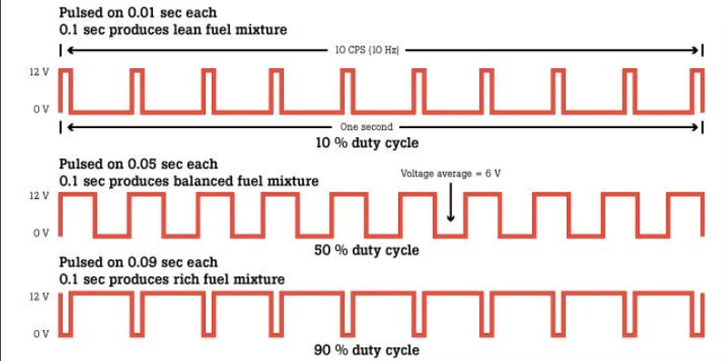
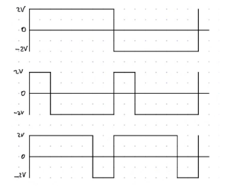
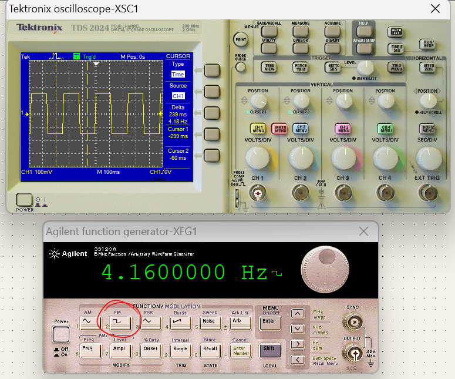
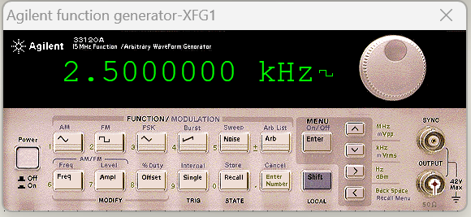
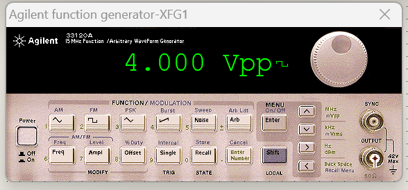
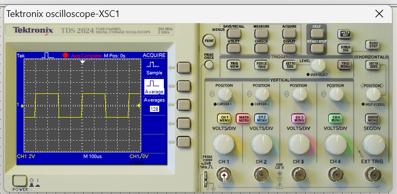
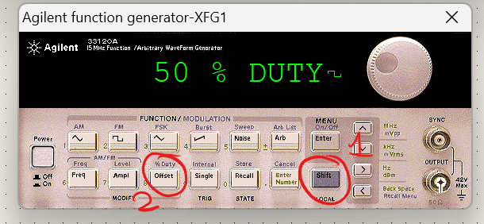

La señal PWM (Pulse Width Modulation, Modulación de Ancho de Pulso) es una señal que utiliza el microcontrolador para generar una señal continua sobre el proceso a controlar.
El ciclo de trabajo, a veces denominado “factor de trabajo”, se expresa como un porcentaje del tiempo de activación. Por ejemplo, un ciclo de trabajo del 10% es una señal que se encuentra activada el 10% del tiempo y desactivada el otro 90%.

Señales cuadradas solicitadas:

Para simular las señales cuadradas solicitadas deben seguirse los siguientes pasos:

Siendo
por tanto

A partir de las figuras proporcionadas de las señales solicitadas, podemos identificar que la amplitud es de 2V o, lo que es lo mismo, un voltaje pico a pico de

En este caso se emplearon divisiones de 2V para la escala del voltaje y, a su vez, se emplearon divisiones de 100

Para ajustar el ciclo de trabajo se debe presionar el botón Shift del generador de funciones y posteriormente el botón Offset , mismo que cuenta con leyenda de % Duty.
